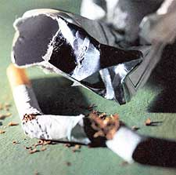
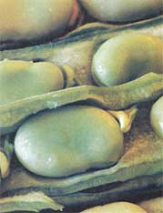

My son and daughter complained so bitterly about my smoking 30 years ago, I quit cold turkey. One day I was smoking some three packs a day of unfiltered, king-sized cigarettes, and the next day, none. I still have dreams occasionally in which I give in to the temptation to light up again, but that will never happen in reality.
Smoking is estimated to cause one-third of all cancer deaths and one-fourth of the fatal heart attacks in the United States. The American Lung Association estimates 350,000 Americans die every year from diseases related to smoking. (My own estimate is closer to 500,000.) Forty percent of smokers die before they reach retirement age.
All the talk about premature death goes over the heads of teen-agers who start smoking and the young adults who won't quit. The hazards of smoking just seem too far off to them.
That's why I like to remind young smokers I know that the habit strikes men in the penis and women in the face. That's right. Smoking damages the blood vessels that supply the penis, so men who smoke have an increased risk of impotence. Smoking damages the capillaries in women's faces, which is why women smokers develop wrinkles years before nonsmokers. (Male smokers develop wrinkles prematurely, too, but somehow this particular antismoking argument seems to score more points with women than with men.)
Years ago, when I kicked the cigarette habit, I didn't know much about herbal medicine. If I were quitting today, I'd use some herbs to help.
Licorice (Glycyrrhiza glabra). I don't have much science here, just a gut belief to back licorice as an antismoking aid. I've also heard a lot of positive stories about people kicking the habit with the help of licorice.
How does this work? Licorice root happens to look just like an old cheroot cigarette. You can keep a stick of licorice root handy and suck on it in place of a cigarette. I believe it works by helping to satisfy the oral cravings people who are addicted to cigarettes seem to have. If I were still a smoker, I'd give this a try.
It's interesting that most licorice coming to the United States goes into tobacco products-chewing tobacco and pipe tobacco-presumably for flavor.
You should be aware that while licorice and its extracts are safe for normal use in moderate amounts-the equivalent of up to about three cups of tea a day-longterm use (more than six weeks) or ingestion of excessive amounts can produce headache, lethargy, sodium and water retention, excessive loss of potassium and high blood pressure.
Red clover (Trifolium pratense). A few years back I got a call from an entrepreneur looking for a source of red clover. He wanted literally tons to use as a major ingredient in a tobacco-free chewing tobacco product he planned to market, all tinned up just like the real thing.
I got this call around the time I learned why red clover has an age-old reputation as a cancer preventer. For tumors to grow, they need a blood supply. They send out biochemical signals that coax tile body into growing blood vessels right into them, a process called angiogenesis.
Several leading cancer researchers have been working on ways to stop these new blood vessels from forming, thereby starving tumors. It turns out one compound with an anti-angiogenic effect is genistein, a constituent of red clover.
So, I welcomed the call from the man seeking red clover. By replacing chewing tobacco with a non-tobacco substitute, he was working to prevent the mouth and tongue cancer chewing tobacco causes. And by replacing tobacco with red clover, he was unwittingly providing anti-angiogenic benefits as well.
I don't know what became of the man's tobacco-free red clover chaw, but I have a tin of red clover-based snuff. Aspiring ex-smokers can chew on fresh clover flowers (add them to salads) or other, more palatable herbs containing genistein, such as ground nuts, peanuts or soybeans. These munchies would help satisfy some of the oral needs smokers and ex-smokers seem to have. At the same time, the genistein in these snacks would be attacking any tumors that might be trying to get a start.
If you're having a hard time kicking the habit, you might want to develop another habit-drinking red clover tea daily. It may offer a measure of protection.
Carrot (Daucus carota). Back when I quit smoking, carrots helped me quite a bit. I used to drive to the office munching on a raw carrot or two instead of puffing on a cigarette.
At the time, I chose carrots because I liked them, but now we know that carotenoids, the chemical relatives of vitamin A that give carrots their orange color, also help prevent cancer-especially if the carotenoids come from carrots or other whole foods rather than from capsules. (Generally, if you isolate one beneficial chemical-take it out of context-you're missing out on a whole lot of other chemistry that can also help you.)
If cigarettes are cancer sticks, carrots are anticancer sticks. In fact, all fruits and vegetables are. The research is consistent and compelling. The more fruits and vegetables people eat, the less likely they are to develop any major cancer, including lung cancer. So even if you don't quit smoking, you should still be munching on carrots.
Fava beans (Vicia faba). As one of the best dietary sources of 1-dopa, converted to dopamine in the brain, fava beans might help alleviate your nicotine cravings. I came to this conclusion after Italian scientists showed that within the brain, the shell area of the nucleus accumbens, which plays an important role in emotions, is affected by dopamine. Dopamine is linked to the euphoria created by addictive drugs. Nicotine also boosts dopamine, leading Roy Wise of Concordia University, Montreal, to comment, "We should either downgrade heroin to habit-forming, or upgrade nicotine to addicting."
Bupropion is an expensive drug, a dopamine-enhancer, which already has U.S. Food and Drug Administration approval for use in programs to help people quit smoking. Fava beans and their cousins, velvet beans, might be cheaper, safer and more effective.
Turmeric (Curcuma long). West Coast herbalist Kathi Keville, co-author of Aromatherapy: A Complete Guide to Healing Arts tells of chronic smokers who took turmeric daily as part of a research project at the National Institute of Nutrition in Hyderabad, India. Those who took turmeric eliminated three to eight times more carcinogens from their bodies as smokers who took no turmeric. Keville cited a Rutgers University study that speculates even small amounts of thyme, basil and turmeric can reduce one's risk of cancer. If I were still a smoker, I'd be sure and eat plenty of cunies, and some great basil pesto while I was at it.
Avoiding cigarettes and cigarette smoke in the first place is the first line of defense, so if you can quit you may be saving your own life and the lives you love. In the meantime, give your body a fighting chance with some of nature's boosters.
Look for more excerpts from James Duke's The Green Pharmacy (See MOTHER's Bookshelf, Page 103) in future issues of Mother Earth News. One of the world's leading authorities on herbal healing, Duke is author of The Green PharmacyAnti-Aging Prescriptions. Active in rain forest preservation, he regularly leads ecotours in the Amazon. Contact him at jduke@father naturesfarmacy.com.
|
 PICTUREQUEST Fava beans are a great dietary source of I-dopa, which converts to dopamine in the brain and can help alleviate cravings. |
 |
|